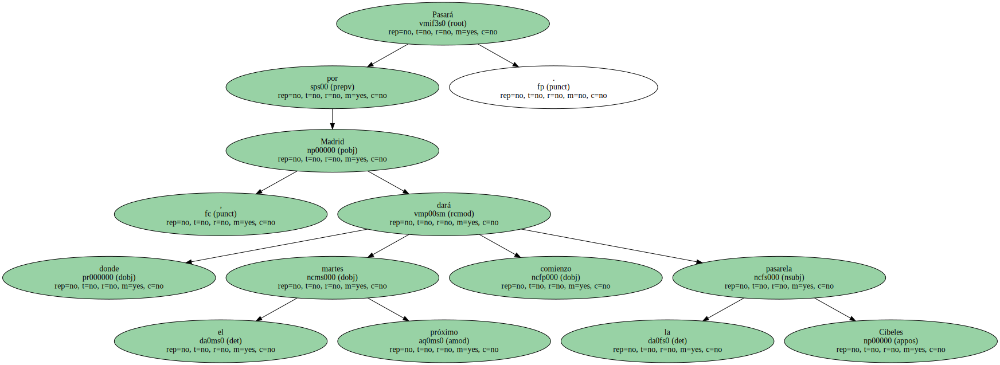
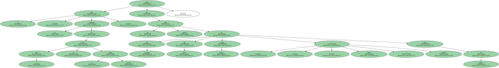
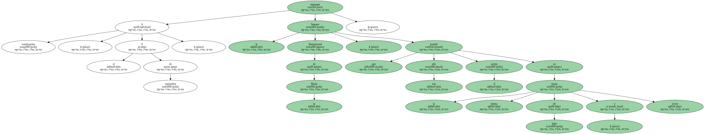
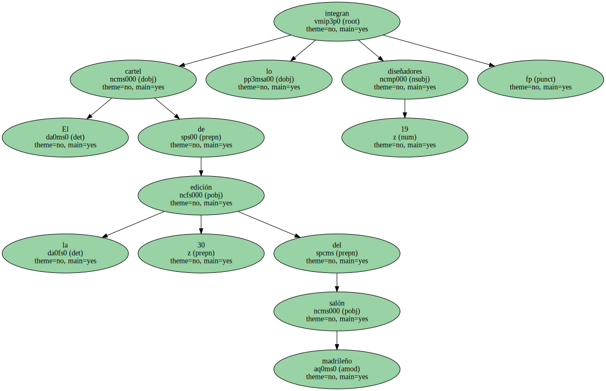
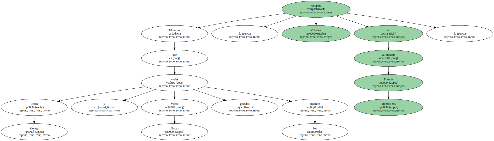

Pasará por Madrid , donde el próximo martes dará comienzo la pasarela Cibeles.
El salón , un escaparate de lo que se llevará el próximo verano , contará con las bazas seguras de Javier Larrainzar , Sita Murt , Angela Arregui , Victorio y Lucchino y Pedro del Hierro.
A continuación , el 9 de septiembre , empezará la Semana Internacional de la Moda , que este año pondrá el acento en la moda íntima , de baño y joven.
El cartel de la 30 edición del salón madrileño lo integran 19 diseñadores.
El clasicismo de Larrainzar abrirá el desfile y lo clausurará la excentricidad de Agatha Ruiz de la Prada.

Mientras que Pedro Morago y Vacas Flacas serán los grandes ausentes , Cibeles recupera al valenciano Francis Montesinos.
